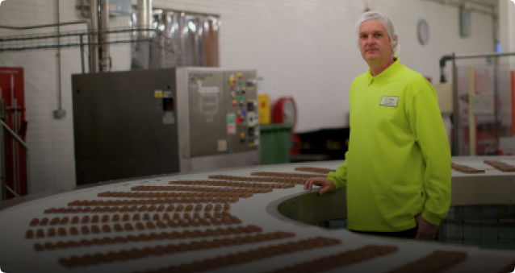
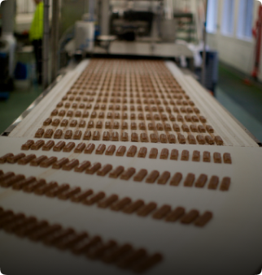

Якості світоч

Фабрика «Світоч», яка є частиною Nestle, керується тими самими внутрішніми стандартами якості виробництва шоколаду, що й Nestle в усьому світі, наприклад – в Швейцарії

Система контролю якості компанії Nestle забезпечує контроль всього ланцюга виробництва. Як приклад, одна цукерка «Світоч Зоряне сяйво» проходить багато перевірок системи якості, перш ніж споживач зможе її скуштувати.